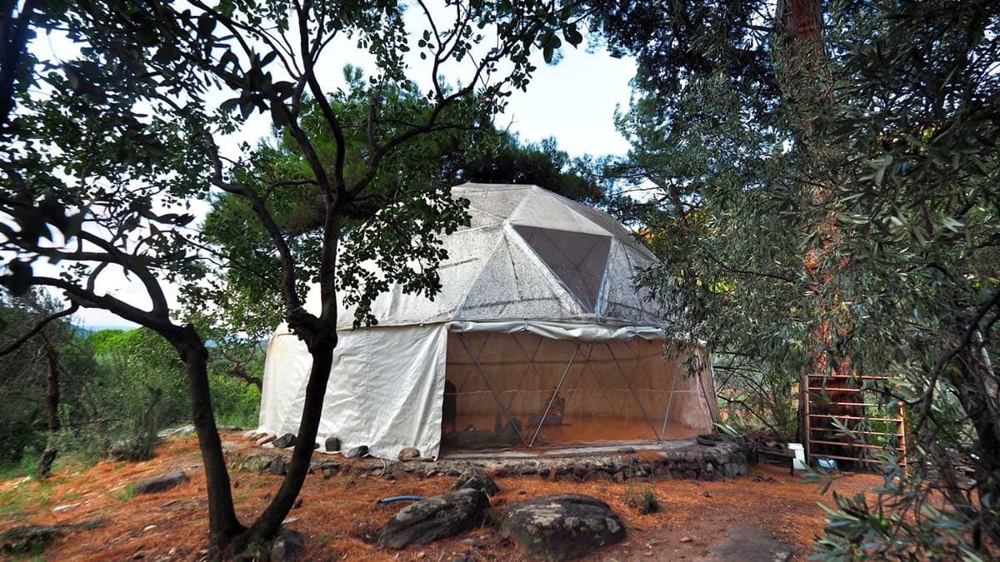
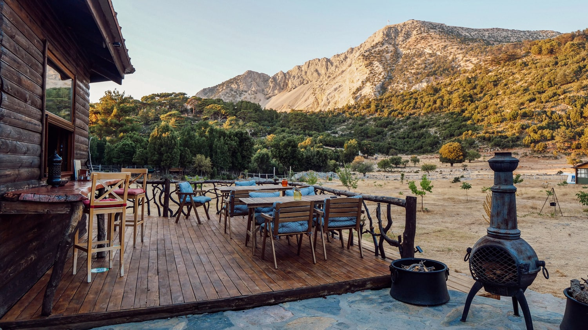
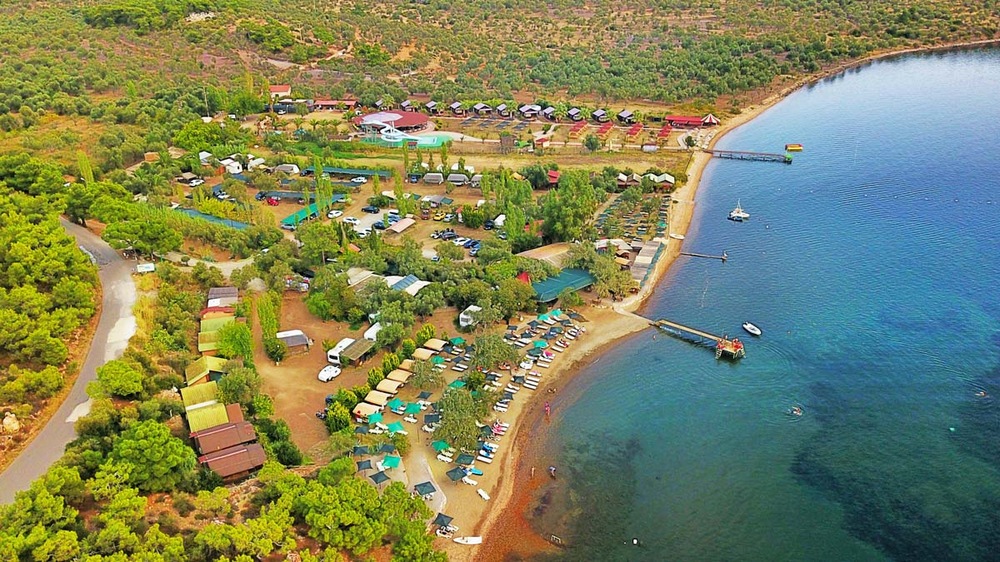

Sultaniye Köyü’nde, Köyceğiz Gölü kenarında yerlilerin işlettiği bizce harika, dingin, salaş bir yer bulduk. Adı Cemil’in Yeri / Akdeniz Camping. Aslında bir restoran, bahçesini de camping olarak kullanıyorlar. Pek bilinmediğinden kalabalık olmuyor. Biz buraya bayıldık, işletmecilerini de çok sevdik, bizce müthiş bir keşif ama salaş yerleri sevemeyenlere göre değil. Sadece derme çatmanın, makyajsızlığın aslında ne kadar büyük bir lüks olduğunu bilen takdir edebilir burayı.

HIZIR KAMP, KAZDAĞLARI, ÇANAKKALE-BALIKESİR
Mimar Sinan’dan iki hocanın ve Mehmet Alan Köyü’nün yerlilerinin beraber işlettiği harika bir yer. Konaklama fiyatlarına kahvaltı ve akşam yemeği dahil ve yemekler artık bahçeden toplanıldığından mıdır, köylü teyzelerin eli değdiğinden midir nedir müthiş leziz. Kenarından teraslar yaparak akan, çivi gibi suyu ile insana zindelik veren bir nehir akıyor. Mayonuzu unutmayın. Kendi çadırınızda, taş veya ahşap evlerde ve ağaç evlerde olmak üzere 3 çeşit konaklama opsiyonunuz var. Rezervasyonsuz müşteri kabul etmiyorlar.

BABAKAMP , FETHİYE
Fethiye’nin Karaağaç mevkiinde bir platoya kurulu olan Babakamp, taş veya bungalov evlerde kalabileceğiniz, dilerseniz kendi çadırınız veya karavanınızla gelip kamp yapabileceğiniz bir kamping. Ancak yolu dar ve toprak olduğu için çekme karavanlar için biraz zorlu, vardığınızda da maalesef karavanı elektiriğe bağlayamıyorsunuz çünkü elektirik şebekesi buraya gelmemiş. Güneş panelleriyle enerji üretiyorlar ama o da ancak tesise yetiyor. Yani karavanla gelmeyi iki kere düşünün.
Burada yoga stüdyo derslerinden, doğa yürüyüşlerine çeşitli aktiviteler de gerçekleştiriliyor. Aynı zamanda konaklamaya açık büfe 3 öğün de dahil. Yemeklerde kullanılan sebzeler, işletmenin kendi bostanından geliyor. Ortak kullanım alanları arasında kütüphane, cafe, havuz gibi yerler var. Bir de harika bir gün batımı platformu.
YEDİGÖLLER , BOLU
Yedigöller Milli Parkı’nda büfe, restoran gibi olanaklar yok. Bu nedenle hazırlıklı gelmek gerekiyor. Sadece piknikçiler için tahta masalar var. Su, WC, aydınlatma var. Açık ateş yakılamıyor fakat alanda taştan yapılma ateş yakma bölümleri mevcut.Ayrıca buraya yakın Abant Gölü çevresinde, Örmeci Yaylası Kamp Alanı ve Sinekli Yayla Kamp Alanı da var. Buralar çok daha bakir, daha az turistik kamp alanları.

ADA CAMPING , CUNDA ADASI , AYVALIK
Ada Camping, Milli Park’ın içinde, tüm Cunda’da denizin en temiz olduğu yerde konuşlanmış. Tesis bölgedeki en güzel denize giriş noktasında. İster çadır ya da karavan kampı yapıyorsunuz, isterseniz ahşap ev tarzı odalarında konaklayabiliyorsunuz. Bir de çekme karavandan dönüştürülmüş odalar var. Ekonomik olsun diye kamp yapmayı tercih edenlerdenseniz hesaplı bir işletme olduğunu söyleyemeyiz.